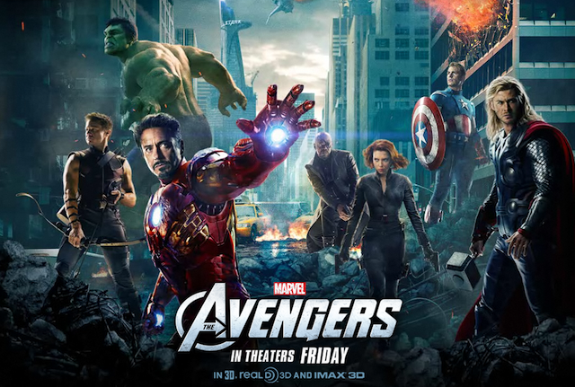
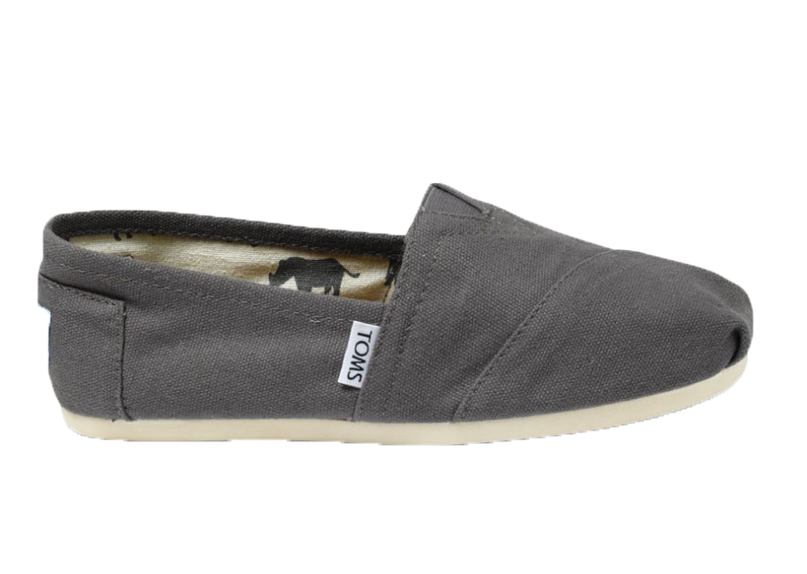
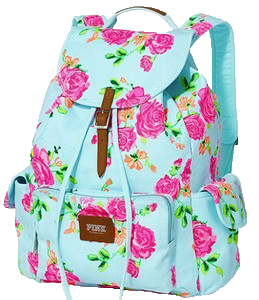
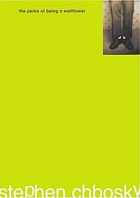

The Avengers is a 2012 American superhero film produced by Marvel Studios and distributed by Walt Disney Studios Motion Pictures, based on the Marvel Comics superhero team of the same name. It is the sixth installment in the Marvel Cinematic Universe. The film is scripted and directed by Joss Whedon and features an ensemble cast that includes Robert Downey, Jr., Chris Evans, Mark Ruffalo, Chris Hemsworth, Scarlett Johansson, Jeremy Renner, Tom Hiddleston, Clark Gregg, Cobie Smulders, Stellan Skarsgård and Samuel L. Jackson. In the film, Nick Fury, director of the peacekeeping organization S.H.I.E.L.D., recruits Iron Man, Captain America, the Hulk, and Thor to form a team that must stop Thor's adoptive brother Loki from subjugating Earth.

2012 had a lot of pop culture items/events. Popular shoes were Toms. Victoria's Secret Backpacks were huge at Grandville High School. People thought the world was going to end on December 21 due to the Myan calendar ending on that date. One Direction was the popular boy band at the time, loved by everyone except me. The Hipster style was huge at the time, throwing together fake glasses, floral jeans, and shirts that don't make any sense. I honestly have no idea why this style is so popular.




Homepage
.
My Future
.
Quotes
The Perks of Being a Wallflower is narrated by a teenager who goes by the alias of "Charlie"; he describes various scenes in his life by writing a series of letters to an anonymous person, whom he does not know personally. The book was made into a film in 2012, starring Logan Lerman and Emma Watson, directed by the author.
The story explores topics such as introversion, abuse, drugs, sexuality, and the awkward times of adolescence.
The story takes place in a suburb of Pittsburgh during the early 1990s, Charlie's freshman year in a high school. Charlie is the eponymous wallflower of the novel.
